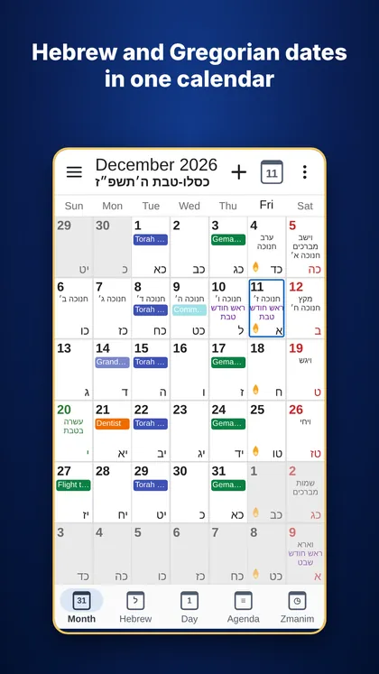
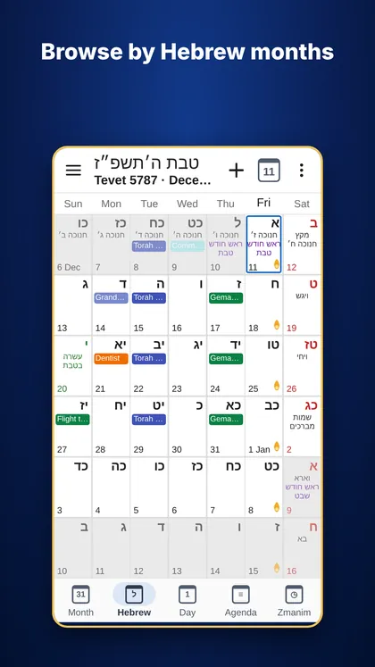
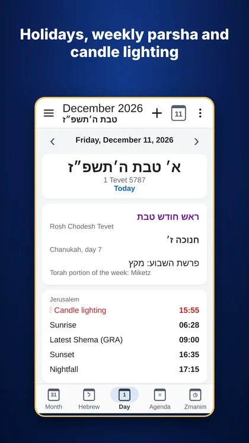
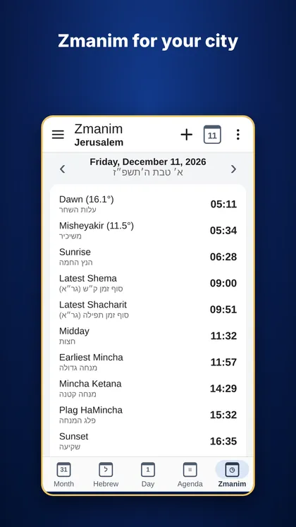
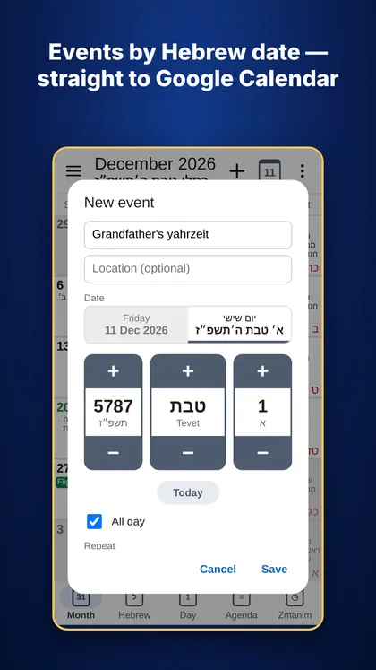

LuachPlus · by Tora Doctor
Hebrew and Gregorian dates in one calendar
Free Android app
Holidays, the weekly parsha, candle lighting and zmanim for your city — together with your own events from Google Calendar. Enter a yahrzeit or a birthday by the Hebrew date once, and it is in your calendar every year.
- Free
- No ads
- No registration
- English · עברית · Русский · Deutsch
Today in the calendarcalculated on this page, just like in the app
Hebrew date
Weekly parsha
Next holiday
Features
Two calendars in one grid
Every day shows both dates. Browse by Gregorian or by Hebrew months and jump to any date.
Holidays and parsha
All holidays, fasts, Rosh Chodesh, special Shabbatot and the Omer count. Israel or diaspora custom.
Candle lighting and zmanim
Candle lighting and havdalah, sunrise, latest Shma and Tefilla, mincha, plag, sunset and nightfall — for your city or by GPS.
Events by Hebrew date
A birthday or a yahrzeit repeats every year (or every month) on its Hebrew date — right in Google Calendar.
Yahrzeit
Enter the date of death by the Hebrew or Gregorian calendar, before or after sunset. The dates go into your calendar for years ahead, with a ready message for the family.
Reminders
Candle lighting, the Omer count, the start and end of fasts, and a yahrzeit on the evening before.
Home screen widget
The Hebrew date, the weekly parsha and candle lighting time at a glance.
Google Calendar
Your events appear in the grid. Create, edit and delete them right in the app. Multi-day events show as one bar.
Four languages
English, Hebrew, Russian and German. Holiday names in the app language or in a language you choose.
How to start
Install
Get LuachPlus on Google Play and allow access to your calendar, so your events appear in the grid.
Choose your city
☰ → City, or “Use my location” in ☰ → Settings. The city sets the Israel or diaspora custom and the candle lighting minutes; both can be changed there.
Add an event
Tap “+”, choose a Gregorian or Hebrew date and “Repeat: every year on the Hebrew date” for a birthday or a yahrzeit.
Yahrzeit
☰ → Yahrzeit → “+ Add”. Enter the name and the date of death, and the dates go into your calendar for years ahead.
Reminders and widget
☰ → Settings → Reminders. In the same place: “Home screen widget”.
Holidays in Google Calendar
Optional: ☰ → “Holidays → Google Calendar” writes them to a calendar you choose. ☰ → Settings → “Remove written holidays” removes them again.
Frequently asked questions
Is it really free?
Yes. There is no subscription, no in-app purchase and no advertising.
Where are my events stored?
In your own Google Calendar on the phone. The app has no server of its own and sends your data nowhere. Settings such as the city and language stay on the phone.
Is there an iPhone version?
Not yet. LuachPlus runs on Android 8.0 and newer.
How is the yahrzeit date calculated?
By the Hebrew date of death, following the accepted rules for Adar in a leap year and for 30 Cheshvan and 30 Kislev. If the person passed away after sunset, mark it, and the next Hebrew day is used.
I wrote holidays to Google Calendar and want to remove them
☰ → Settings → “Remove written holidays”, then choose the calendar. Everything the app wrote is removed at once; your own events and yahrzeits stay.
How many minutes before sunset is candle lighting?
It is set by the city you choose (for example, 40 minutes in Jerusalem) and can be changed in ☰ → Settings → Candle lighting.
I have an idea or found a mistake
Write to apps@toradoctor.com. We read every message.
Screenshots





Contact and development
Websites and apps
LuachPlus was built by Tora Doctor. We also develop websites and apps for communities, businesses and Jewish projects.
LuachPlus
Hebrew and Gregorian dates in one calendar